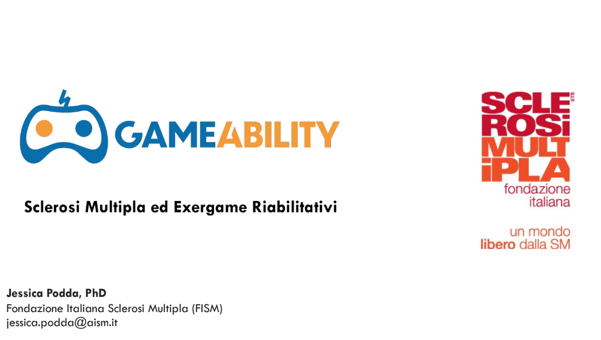

FlickIt
Gameability that heals
Where the game meets neurological rehabilitation

Therapeutic Gameability for Multiple Sclerosis
FlickIt is not just a memory game.
It is a game designed to protect against the most common symptoms in MS.
What FlickIt trains every day
Coordination
eye-hand
Working memory
and recognition
Attention
sustained
Motivation
and self-esteem
FlickIt transforms minutes of daily training
into moments of joy, challenge and progress.